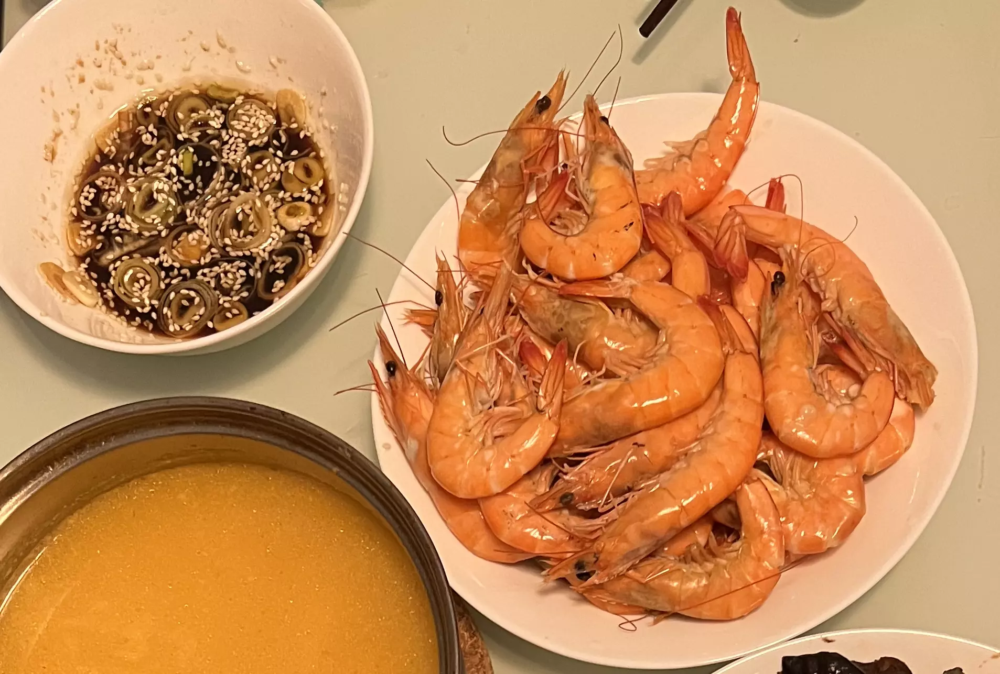

白灼虾的做法
白灼虾非常适合程序员在沿海地区做，类似于清蒸鱼：简单容错、有营养、有满足感，甚至很好看。
预估烹饪难度：★★
必备原料和工具
- 活虾
- 洋葱
- 姜
- 蒜
- 葱
- 食用油
- 酱油
- 料酒
- 芝麻
- 蚝油
- 香醋
计算
每次制作前需要确定计划做几份。一份正好够 1 个人食用
总量：
- 虾 250g * 份数（建议 1-2 人份）
- 葱 一根
- 姜 一块
- 洋葱 一头
- 蒜 5-8 瓣
- 食用油 10-15ml
- 料酒 20 ml
- 酱油 10-15ml
- 芝麻 一把
- 香醋 10 ml
- 蚝油 10 ml
操作
- 洋葱切小块，姜切片，平铺平底锅。
- 活虾冲洗一下（去除虾线、剪刀减掉虾腿虾须子都是可选操作），控水，铺在平底锅的洋葱、姜片之上。
- 锅内倒入料酒，盖上锅盖，中火 1 分钟，小火 5 分钟，关火 5 分钟。
- 和上一步并行操作，制作蘸料：
- 葱切成葱花、蒜切碎、倒入酱油、芝麻、香醋，搅拌之。
- 油烧热，淋入蘸料。
- 虾出锅，用干净的盘子装好。
附加内容
- 开始不能大火、防止糊底。
- 如果锅盖有通气口、时间要相应调节一下（考虑增加 30 秒中火）。
- 蘸料其实也是可选的、也可以是纯的醋，大自然馈赠的鲜虾在没有水带走冲淡鲜甜的情况下口感味道都非常棒的。
技术细节：

如果您遵循本指南的制作流程而发现有问题或可以改进的流程，请提出 Issue 或 Pull request 。